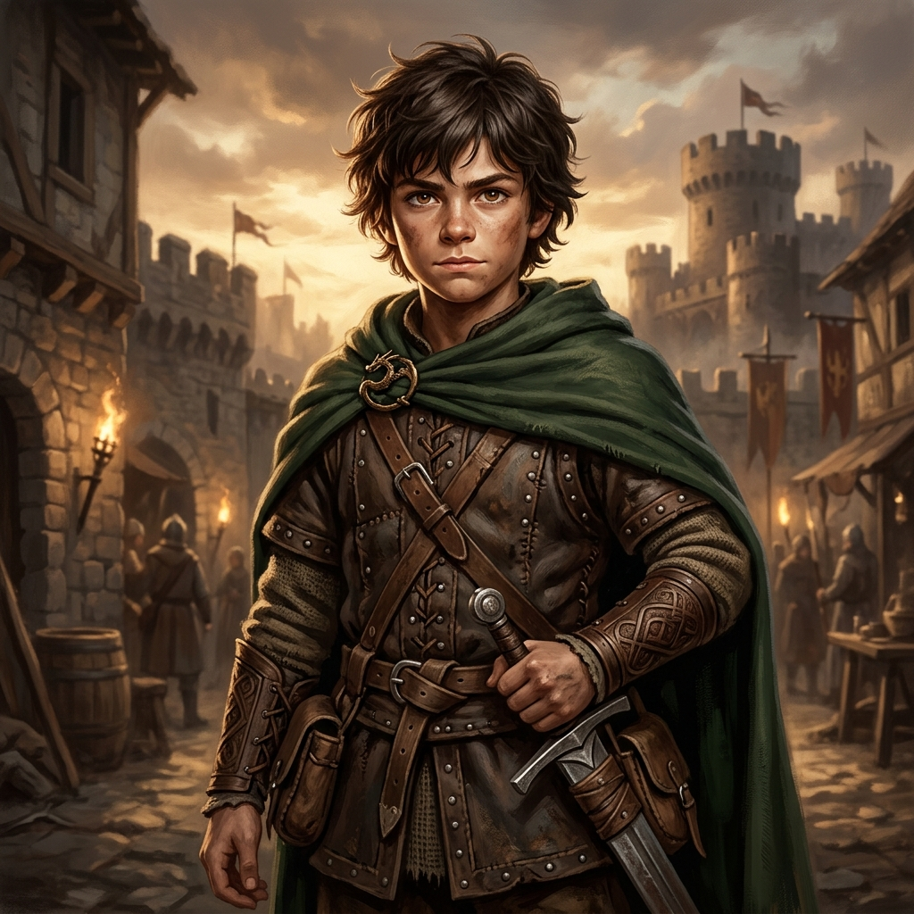

"El Joven Héroe de Davir"

Personalidad: Observador, empático y profundamente leal. Mantiene la calma frente al peligro e inspira valor a sus compañeros.
Motivación: Proteger a su familia y su aldea, unificar a las tribus y detener la devastación de la guerra.
Conflicto Clave: Ver partir a los adultos al frente a los 12 años y asumir la responsabilidad del liderazgo al cumplir los 18.
Origen: Crecido en una tranquila aldea tribal jugando con espadas de madera y pescando en el río.
Evolución Narrativa: Evoluciona de un niño alegre de 12 años a un consagrado guerrero de 18 años que unifica a los héroes de Davir.